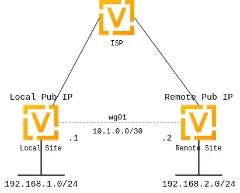
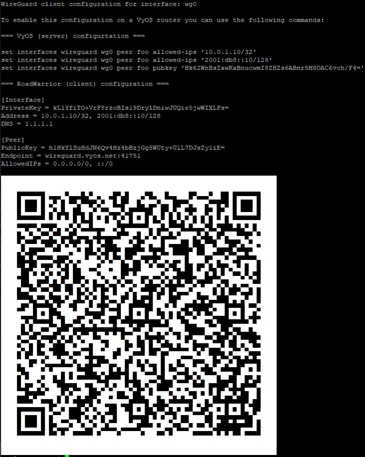

WireGuard
WireGuard is an extremely simple, fast, and modern VPN that utilizes state-of-the-art cryptography. See https://www.wireguard.com for more information.
Site-to-site VPN
The following diagram illustrates a site-to-site VPN setup.

Keypairs
WireGuard requires a keypair, which includes a private key to decrypt incoming traffic, and a public key for peer(s) to encrypt outgoing traffic.
Generate keypair
Generate a keypair: a public and a private key.
Note
This command only outputs the keys to your console. It neither stores them in the system nor applies them to the system configuration.
vyos@vyos:~$ generate pki wireguard key-pair
Private key: iJJyEARGK52Ls1GYRCcFvPuTj7WyWYDo//BknoDU0XY=
Public key: EKY0dxRrSD98QHjfHOK13mZ5PJ7hnddRZt5woB3szyw=
Generate a keypair and output the private key assignment command for the specified interface.
vyos@vyos:~$ generate pki wireguard key-pair install interface wg10
"generate" CLI command executed from operational level.
Generated private key is not automatically added to the VyOS configuration, use the following configuration mode commands to install key:
set interfaces wireguard wg10 private-key '4Krkv8h6NkAYMMaBWI957yYDJDMvj9URTHstdlOcDU0='
Corresponding public-key to use on peer system is: 'UxDsYT6EnpTIOKUzvMlw2p0sNOKQvFxEdSVrnNrX1Ro='
Note
If you invoke this command from configuration mode with the run
prefix, the generated private key is automatically assigned to the specified
interface.
vyos@vyos# run generate pki wireguard key-pair install interface wg10
"generate" CLI command executed from config session.
Generated private-key was imported to CLI!
Use the following command to verify: show interfaces wireguard wg10
Corresponding public-key to use on peer system is: '7d9KwabjLhHpJiEJeIGd0CBlao/eTwFOh6xyCovTfG8='
vyos@vyos# compare
[edit interfaces]
+wireguard wg10 {
+ private-key CJweb8FC6BU3Loj4PC2pn5V82cDjIPs7G1saW0ZfLWc=
+}
Show the public key assigned to the interface.
vyos@vyos:~$ show interfaces wireguard wg01 public-key
EKY0dxRrSD98QHjfHOK13mZ5PJ7hnddRZt5woB3szyw=
Optional
Generate a pre-shared key.
The pre-shared key is optional. It adds an additional layer of symmetric-key cryptography on top of the asymmetric cryptography.
vyos@vyos:~$ generate pki wireguard preshared-key
Pre-shared key: OHH2EwZfMNK+1L6BXbYw3bKCtMrfjpR4mCAEeBlFnRs=
Generate a pre-shared key and output the key assignment command for the specified peer.
vyos@vyos:~$ generate pki wireguard preshared-key install interface wg10 peer foo
"generate" CLI command executed from operational level.
Generated preshared-key is not stored to CLI, use configure mode commands to install key:
set interfaces wireguard wg10 peer foo preshared-key '32vQ1w1yFKTna8n7Gu7EimubSe2Y63m8bafz55EG3Ro='
Pre-shared key: +LuaZ8W6DjsDFJFX3jJzoNqrsXHhvq08JztM9z8LHCs=
Note
If you invoke this command from configuration mode with the run prefix, the generated key is automatically assigned to the specified peer.
Interface configuration
The next step is to configure your local WireGuard interface and define the
networks you want to tunnel (allowed-ips).
If your system only initiates connections, specifying the listen port is optional. If your system accepts incoming connections, you must define a port for peers to connect to. Otherwise, WireGuard selects a random port at each reboot, and that may break your peers’ ability to connect if that port is not enabled in your firewall rules.
To configure a WireGuard tunnel, you also need your peer’s public key.
Note
The public key specified in the peer configuration block is always the remote peer’s public key, never your local one.
Local side configuration
The local side is configured with the following parameters:
Local WireGuard interface IP:
10.1.0.1/30Local listen port:
51820Remote peer name:
to-wg02Remote peer endpoint:
192.0.2.1on port51820Remote peer public key:
XMrlPykaxhdAAiSjhtPlvi30NVkvLQliQuKP7AI7CyI=Allowed networks:
192.168.2.0/24
set interfaces wireguard wg01 address '10.1.0.1/30'
set interfaces wireguard wg01 description 'VPN-to-wg02'
set interfaces wireguard wg01 peer to-wg02 allowed-ips '192.168.2.0/24'
set interfaces wireguard wg01 peer to-wg02 address '192.0.2.1'
set interfaces wireguard wg01 peer to-wg02 port '51820'
set interfaces wireguard wg01 peer to-wg02 public-key 'XMrlPykaxhdAAiSjhtPlvi30NVkvLQliQuKP7AI7CyI='
set interfaces wireguard wg01 port '51820'
set protocols static route 192.168.2.0/24 interface wg01
To send traffic destined for 192.168.2.0/24 through the WireGuard interface
(wg01), configure a static route. Multiple IP addresses or networks can be
defined and routed. The final check is performed against allowed-ips, which
either permits or drops the traffic.
Warning
You cannot assign the same allowed-ips to multiple WireGuard
peers. This is a strict design restriction. For more information, check the
WireGuard mailing list.
Assign a private key to the specified WireGuard interface.
Example:
set interfaces wireguard wg01 private-key 'iJJyEARGK52Ls1GYRCcFvPuTj7WyWYDo//BknoDU0XY='
To generate a private key, use the following command:
generate pki wireguard key-pair.
To view the public key assigned to the interface so you can share it with a
peer, use the following command:
show interfaces wireguard wg01 public-key.
Enable threaded mode for all NAPI instances of the specified network device.
Enabling threaded mode doesn’t affect device operation and can be done while the device is up.
This mode is disabled by default.
Example:
set interfaces wireguard wg01 per-client-thread
Remote side configuration
set interfaces wireguard wg01 address '10.1.0.2/30'
set interfaces wireguard wg01 description 'VPN-to-wg01'
set interfaces wireguard wg01 peer to-wg01 allowed-ips '192.168.1.0/24'
set interfaces wireguard wg01 peer to-wg01 address '192.0.2.2'
set interfaces wireguard wg01 peer to-wg01 port '51820'
set interfaces wireguard wg01 peer to-wg01 public-key 'EKY0dxRrSD98QHjfHOK13mZ5PJ7hnddRZt5woB3szyw='
set interfaces wireguard wg01 port '51820'
set interfaces wireguard wg01 private-key 'OLTQY3HuK5qWDgVs6fJR093SwPgOmCKkDI1+vJLGoFU='
set protocols static route 192.168.1.0/24 interface wg01
Firewall exceptions
To allow WireGuard traffic through the WAN interface, create a firewall exception:
set firewall ipv4 name OUTSIDE_LOCAL rule 10 action accept
set firewall ipv4 name OUTSIDE_LOCAL rule 10 description 'Allow established/related'
set firewall ipv4 name OUTSIDE_LOCAL rule 10 state established enable
set firewall ipv4 name OUTSIDE_LOCAL rule 10 state related enable
set firewall ipv4 name OUTSIDE_LOCAL rule 20 action accept
set firewall ipv4 name OUTSIDE_LOCAL rule 20 description WireGuard_IN
set firewall ipv4 name OUTSIDE_LOCAL rule 20 destination port 51820
set firewall ipv4 name OUTSIDE_LOCAL rule 20 log enable
set firewall ipv4 name OUTSIDE_LOCAL rule 20 protocol udp
Ensure that the OUTSIDE_LOCAL firewall group is applied to the WAN interface and in an input (local) direction.
set firewall ipv4 input filter rule 10 action jump
set firewall ipv4 input filter rule 10 jump-target 'OUTSIDE_LOCAL'
set firewall ipv4 input filter rule 10 inbound-interface name 'eth0'
Verify that your firewall rules permit traffic. If so, your WireGuard VPN should be operational.
wg01# ping 192.168.1.1
PING 192.168.1.1 (192.168.1.1) 56(84) bytes of data.
64 bytes from 192.168.1.1: icmp_seq=1 ttl=64 time=1.16 ms
64 bytes from 192.168.1.1: icmp_seq=2 ttl=64 time=1.77 ms
wg02# ping 192.168.2.1
PING 192.168.2.1 (192.168.2.1) 56(84) bytes of data.
64 bytes from 192.168.2.1: icmp_seq=1 ttl=64 time=4.40 ms
64 bytes from 192.168.2.1: icmp_seq=2 ttl=64 time=1.02 ms
An additional layer of symmetric-key cryptography can be used on top of the asymmetric cryptography. This is optional.
vyos@vyos:~$ generate pki wireguard preshared-key
Pre-shared key: rvVDOoc2IYEnV+k5p7TNAmHBMEGTHbPU8Qqg8c/sUqc=
Copy the key, as it is not stored locally. Since it is a symmetric key, only you and your peer should know its contents. Distribute the key securely.
wg01# set interfaces wireguard wg01 peer to-wg02 preshared-key 'rvVDOoc2IYEnV+k5p7TNAmHBMEGTHbPU8Qqg8c/sUqc='
wg02# set interfaces wireguard wg01 peer to-wg01 preshared-key 'rvVDOoc2IYEnV+k5p7TNAmHBMEGTHbPU8Qqg8c/sUqc='
Remote access (road warrior)
With WireGuard, a road warrior VPN configuration is similar to a site-to-site
VPN. It just omits the address and port statements.
In the following example, the IP addresses for remote clients are defined within each peer configuration. This allows peers to communicate with each other.
Additionally, this setup uses a persistent-keepalive flag set to 15 seconds
to keep the connection alive. This setting is mainly relevant if a peer is
behind NAT and cannot be reached if the connection is lost. For effectiveness,
the value should be lower than the UDP timeout.
wireguard wg01 {
address 10.172.24.1/24
address 2001:db8:470:22::1/64
description RoadWarrior
peer MacBook {
allowed-ips 10.172.24.30/32
allowed-ips 2001:db8:470:22::30/128
persistent-keepalive 15
pubkey F5MbW7ye7DsoxdOaixjdrudshjjxN5UdNV+pGFHqehc=
}
peer iPhone {
allowed-ips 10.172.24.20/32
allowed-ips 2001:db8:470:22::20/128
persistent-keepalive 15
pubkey BknHcLFo8nOo8Dwq2CjaC/TedchKQ0ebxC7GYn7Al00=
}
port 2224
private-key OLTQY3HuK5qWDgVs6fJR093SwPgOmCKkDI1+vJLGoFU=
}
Below is the configuration for the iPhone peer. The AllowedIPs wildcard
setting directs all IPv4 and IPv6 traffic through the VPN connection.
[Interface]
PrivateKey = ARAKLSDJsadlkfjasdfiowqeruriowqeuasdf=
Address = 10.172.24.20/24, 2001:db8:470:22::20/64
DNS = 10.0.0.53, 10.0.0.54
[Peer]
PublicKey = RIbtUTCfgzNjnLNPQ/ulkGnnB2vMWHm7l2H/xUfbyjc=
AllowedIPs = 0.0.0.0/0, ::/0
Endpoint = 192.0.2.1:2224
PersistentKeepalive = 15
To enable split tunneling, specify the remote subnets. This ensures that only traffic destined for the remote site is sent through the tunnel, while all other traffic remains unaffected.
[Interface]
PrivateKey = 8Iasdfweirousd1EVGUk5XsT+wYFZ9mhPnQhmjzaJE6Go=
Address = 10.172.24.30/24, 2001:db8:470:22::30/64
[Peer]
PublicKey = RIbtUTCfgzNjnLNPQ/ulkGnnB2vMWHm7l2H/xUfbyjc=
AllowedIPs = 10.172.24.30/24, 2001:db8:470:22::/64
Endpoint = 192.0.2.1:2224
PersistentKeepalive = 15
Operational commands
Status
Show information about the WireGuard service, including the latest handshake.
vyos@vyos:~$ show interfaces wireguard wg01 summary
interface: wg01
public key:
private key: (hidden)
listening port: 51820
peer: <peer pubkey>
endpoint: <peer public IP>
allowed ips: 10.69.69.2/32
latest handshake: 23 hours, 45 minutes, 26 seconds ago
transfer: 1.26 MiB received, 6.47 MiB sent
Show a list of all WireGuard interfaces.
Codes: S - State, L - Link, u - Up, D - Down, A - Admin Down
Interface IP Address S/L Description
--------- ---------- --- -----------
wg01 10.0.0.1/24 u/u
Show general information about a specific WireGuard interface.
vyos@vyos:~$ show interfaces wireguard wg01
interface: wg01
address: 10.0.0.1/24
public key: h1HkYlSuHdJN6Qv4Hz4bBzjGg5WUty+U1L7DJsZy1iE=
private key: (hidden)
listening port: 41751
RX: bytes packets errors dropped overrun mcast
0 0 0 0 0 0
TX: bytes packets errors dropped carrier collisions
0 0 0 0 0 0
Remote access (road warrior) clients
Some users connect mobile devices to their VyOS router using WireGuard. To simplify deployment, generate a per-mobile configuration from the VyOS CLI.
Warning
From a security perspective, it is not recommended to let a third party create and share the private key for a secure connection. You should create the private portion yourself and hand out only the public key.
Generate a client configuration file that establishes a connection to the specified interface.
The public key from the specified interface is automatically included in the configuration file.
The command also generates a configuration snippet that can be copied into the
VyOS CLI. The <name> you provide will be used as the peer name in the
snippet.
You must also specify the IP address or FQDN of the server the client connects to. The address parameter can be used twice to assign both an IPv4 (/32) and an IPv6 (/128) address to the client.
